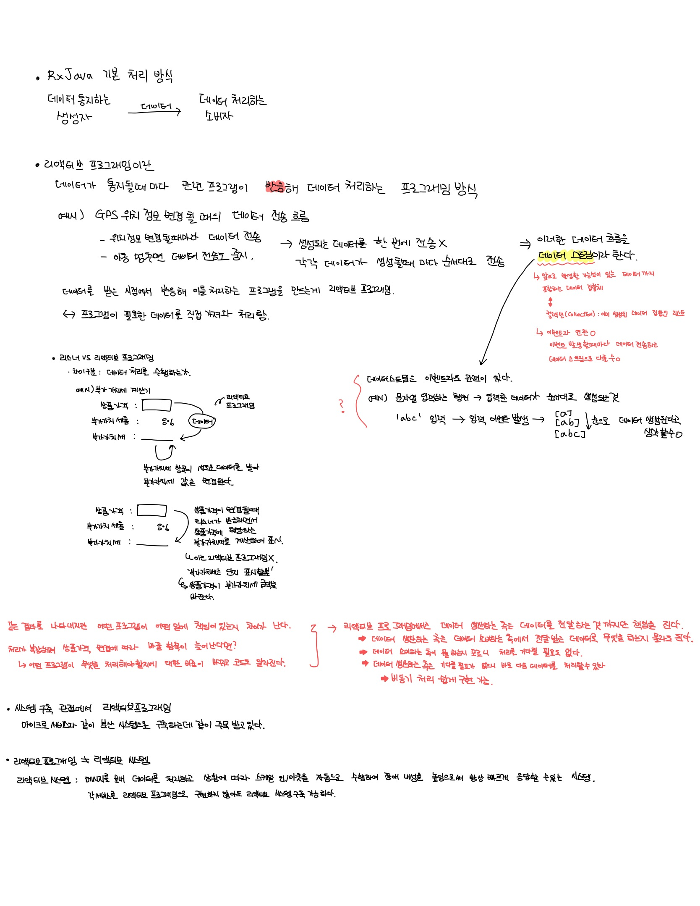

Introduction
윈도우에서 개발환경 구성하기
윈도우10에서 도커설치하기
도커로 GitBook 구성하기
Chocolatey
Java
Java 8 Stream API
URL 인코딩에 관하여
Spring
AutoConfiguration 설정과 원리
Spring Boot + Swagger 2
Swagger Aggregation
ElasticSearch
elasticsearch 단점
fielddata와 doc_value 이해하기
RxJava
Reactive Programming 정리
Hadoop
Ambari Agent 설치
Ambari 설치 중 이슈 정리
etc
프로그래밍 관련 원칙
GitHub Packages Registry For Docker
Published with GitBook
Reactive Programming 정리
리액티브 프로그래밍 기본 개념
추가 정리 필요... 
results matching "
"
No results matching "
"